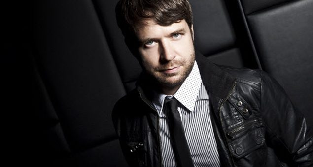

Lange finally returns for 2012 Australian tour


One of the true quiet achievers in the trance scene over the past 15 years, and situated equally on the progressive and uplifting sides of the genre, UK veteran Lange will finally return to Australia next month for a tour after an absence of several years.
Lange will be touring off the back of the celebrations last week of the 100th edition of his Intercity podcast and radio show, which saw him manning a 24-hour online takeover that hosted sets from Ferry Corsten, Cosmic Gate, Tydi, Markus Schulz, Tritonal and more. Otherwise, he’s been keeping busy in 2012.
Lange has dropped a steady stream of productions recently, which have included both vocal-based collaborations with scene regulars Betsie Larkin and Audrey Gallagher, as well as a string of tougher, techier numbers under the ‘Lange pres. LNG’ alias. One of the scene’s longterm innovators, he says he’s witnessed a massive transformation the past 12 months.
“It’s sort of went from us tinkering around and experimenting, to a lot producers jumping almost headfirst into the trouse sound,” Lange told ITM, echoing recent sentiments from Andy Moor that “pure trance fans have suffered lately”, with grooves pursued at the expense of melody.
“I’ve been looking and thinking in the studio, about how can I get back to putting perhaps a little more emotion back into these tracks,” Lange says, “but also keeping this groove and edge that’s working so well in the clubs at the moment. It’s trying to get the balance between the two.”